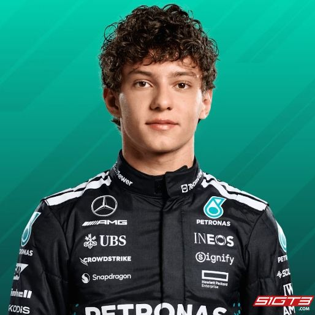
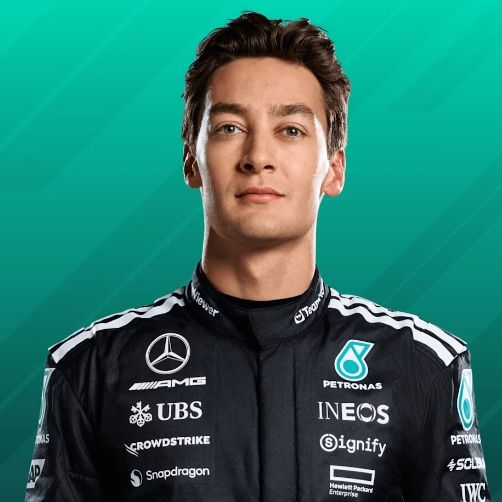
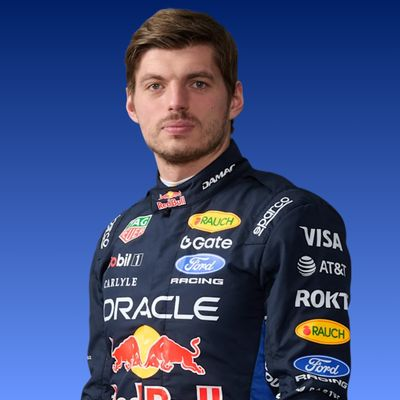
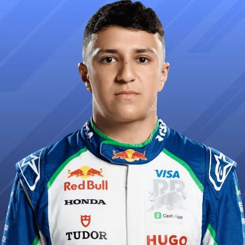
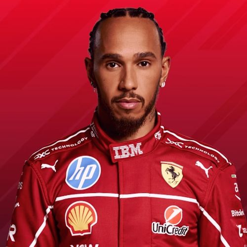
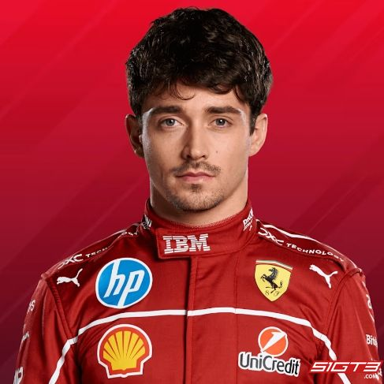
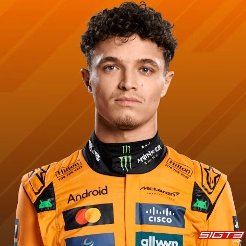
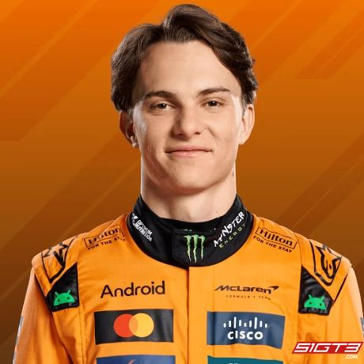
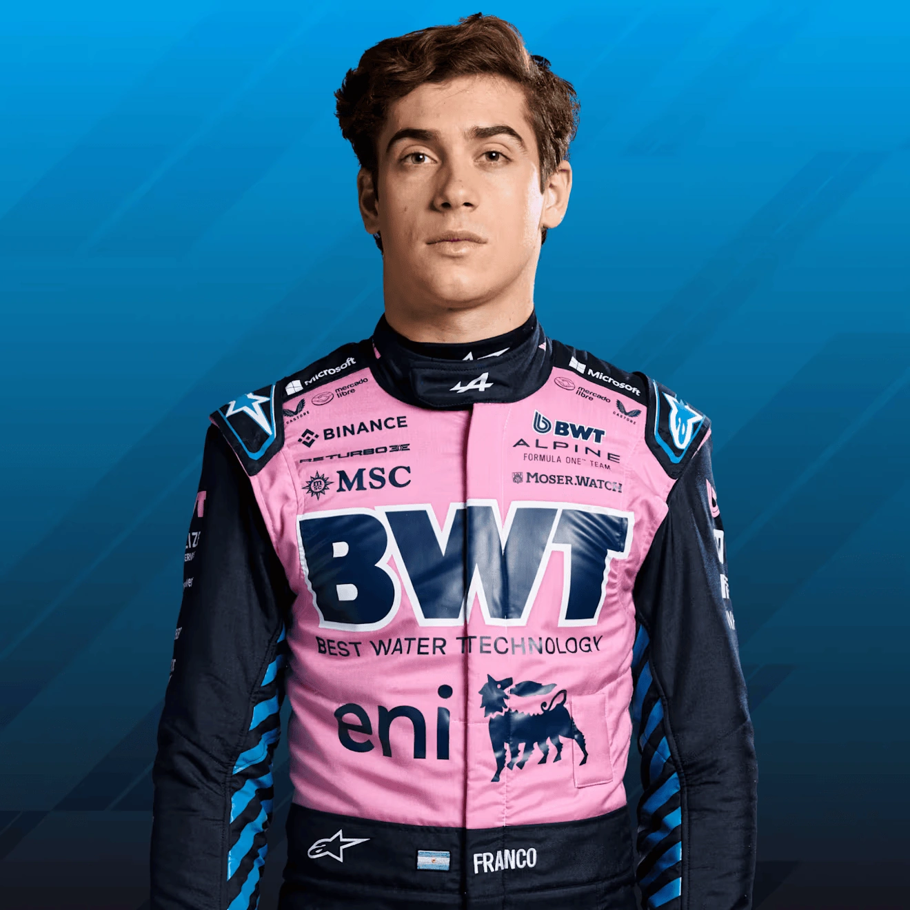

Encontre os atuais pilotos de Formula 1 para a temporada de 2026
Uma seleção especial de pilotos que mostram que a Formula 1 vai muito além de uma competição. É sobre talento, estratégia, coragem e tudo o que nos faz acreditar em ultrapassar limites.
Pilotos em destaque

Andrea Kimi Antonelli
O jovem prodígio italiano da Mercedes, escolhido para assumir a vaga titular e apontado como o futuro da equipe.
George Russell
O piloto principal da Mercedes, conhecido por sua extrema precisão em voltas rápidas e liderança em pista.
Max Verstappen
O multicampeão holandês da Red Bull Racing, famoso por sua agressividade e controle impecável do carro.
Isack Hadjar
O promissor piloto francês promovido da academia para correr na equipe principal ao lado de Verstappen.
Lewis Hamilton
O inglês e heptacampeão mundial, trazendo toda a sua experiência histórica para a equipe Ferrari.
Charles Leclerc
O piloto de Mônaco, especialista em conquistas de pole position e grande destaque da escuderia Ferrari.
Lando Norris
O piloto britânico da McLaren, conhecido por sua velocidade e habilidade em ultrapassagens.
Oscar Piastri
O jovem australiano da McLaren, reconhecido por sua consistência e talento em corridas estratégicas.
Gabriel Bortoleto
A grande promessa brasileira que estreou no grid da categoria máxima liderando o projeto da Audi.